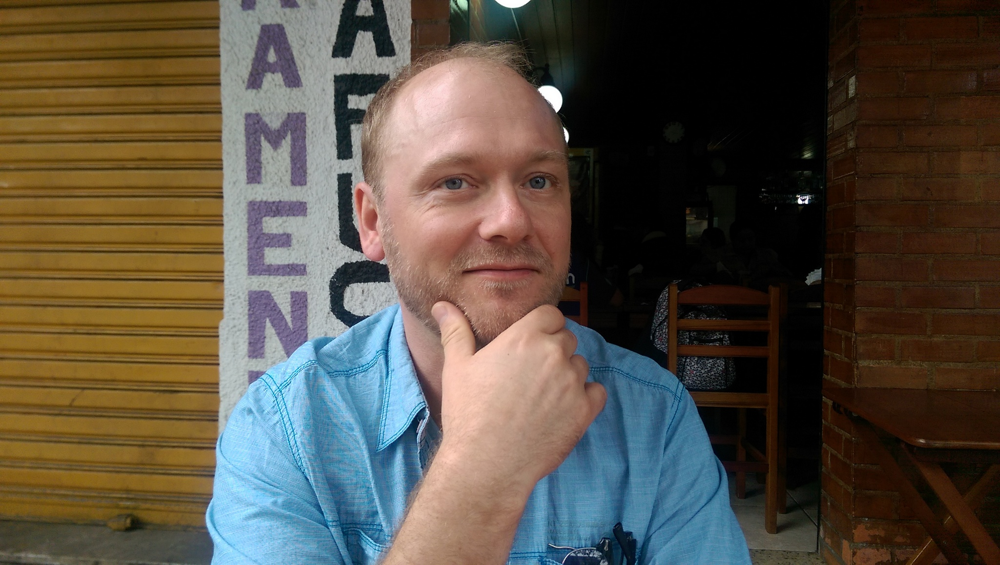

My research in linguistics revolves around the fields of acoustic phonetics, articulatory phonology, and sociolinguistics, with major interfaces into computational linguistics, which I see as a pretty natural and necessary connection in this day and age. A lot of my work has looked at the dynamic properties of vowel production, such as diphthongs, from both phonetic and phonological points of view.
I am currently working as a Postdoctoral Research Fellow in the Department of Linguistics at the University of Manitoba as part of the Language in the Prairies Project spearheaded by Dr. Nicole Rosen (see below).
I am a graduate of both the University of Manitoba (B.A. and M.A.) and the University of Victoria (Ph.D.).
My academic work and research experience includes teaching courses in Linguistics at the University of Manitoba and the University of Winnipeg, serving as a research assistant and lab instructor at the University of Victoria, presenting at major linguistics conferences, and volunteering as editor and conference organizer on multiple occasions.
My academic CV contains much more information on all of the above.
I currently have five active research projects:
Dr. Nicole Rosen’s Language in the Prairies Project (LIPP). My work on LIPP focuses on ethnolinguistic sociophonetic variation in English in Winnipeg, Manitoba, Canada. My research on the LIPP data has led to two conference presentations, one with proceedings to be published; another article is currently being prepared for peer review. My focus within the LIPP corpus is to examine variation in English vowel production across ethnic groups and over time. Our work has so far revealed patterns which suggest the development of an ethnolect within the Filipino ethnic community in Winnipeg, who form a very important demographic component of the city.
Investigation of production differences in diphthongs across North American dialects. This work stems from my M.A. and Ph.D. graduate work, which focused largely on Canadian Raising of the /aj/ and /aw/ diphthongs before voiceless codas. I am interested in the ways that different dialects handle pre-voiceless shortening in general, and how this plays out in the context of what are perceived as “raised” diphthongal nuclei.
A study of sociolinguistic innovation in spoken Portuguese in urban Rio de Janeiro, Brazil, which is being undertaken in collaboration with my partner Christiani Pinheiro Thompson (University of Saskatchewan). Since beginning this project in 2015, we have now recorded more than 80 multi-media intervews with nearly 180 middle-school children in Rio. Currently we are focusing on carrying out the lengthy process of transcription, after which we plan to document many of the interesting linguistic innovations taking place in this community, which include lexical, syntactic, and phonological features among others.
Documentation of the Coast Salish language Hul’q’umi’num’ spoken on Vancouver Island, in support of ongoing revitalization efforts. This is a collaboration spearheaded by Dr. Donna Gerdts (Simon Fraser University) and Dr. Sonya Bird, my Ph.D. advisor at University of Victoria. I’ve applied some of the techniques I developed for diphthong analysis in my M.A. and Ph.D. work to looking at production differences between fluent elders and language learners to assist in the language learning process. Although this is a relatively new project for me, it has already led to two conference presentations including a forthcoming proceedings publication. Future plans involve basic phonetic and phonological description of the vowel system of Hul’q’umi’num’, and investigation of the acoustic correlates of laryngeality.
Analysis of diphthong production in the Ecuadorian mixed language Media Lengua. This is a new project in collaboration with Dr. Jesse Stewart (University of Saskatchewan), who has been researching Media Lengua for some time. The lexicon of Media Lengua derives from both Quichua and Spanish. Our current investigation focuses on how diphthongs and vowel sequences from different-origin source languages are handled in Media Lengua, from both phonetic and phonological perspectives.
I host archived copies of most of my published or presented work going back to my 2010 master’s thesis, all of which are listed on my CV: